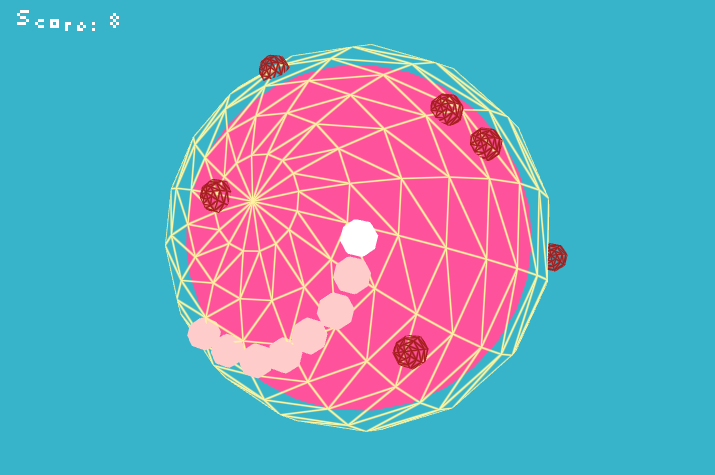

Riemann Snake
This is my first 3D game, written using C++ and OpenGL. I went for a simple gameplay, but it ended up being complicated after all.
You control the snake with the arrow keys, around the sphere. Pick up apples to grow longer and avoid enemies to increase your score.
Nerdy details
Spherical movement
I spent a while figuring out movement along the sphere. I first tried spherical coordinates, with a velocity for the horizontal and vertical angle. This did not give the kind motion I wanted - it was very unintuitive.
So I dropped this and looked back at my notes on physics, and remembered the sentripetal acceleration of a particle in a circular orbit a = - dot(v, v) / r.
To use this I work with positions in world space. The player's acceleration is specified in tangent space, which gives intuitive motion. To transform back to world space I form a tangent frame from the player's velocity, the sphere normal and the cross product of these as the bitangent.
The camera follows the player by using the glm::lookAt function, with the player's velocity as the up-vector, and position at player offset by a scaled normal.
Shaders
The wireframe rendering actually uses a special shader, which is described here. By storing the barycentric coordinates with each vertex attribute, we can calculate how close to the edge we are, using thefwidth() function, and color accordingly.
Audio
The sound effects were created with the bfxr tool, and the bgm was made with pxTone. This was my first time making music for a video game, and it went as you can tell -_-'.Downloads
You may have to download and install the Visual C++ Redistributable for Visual Studio 2012 x86, here.
Windows binary: riemannsnake_windows.7z
Linux binary: riemannsnake_linux.7z
Code
The code for the project can be found on Github: https://github.com/lightbits/riemannsnake